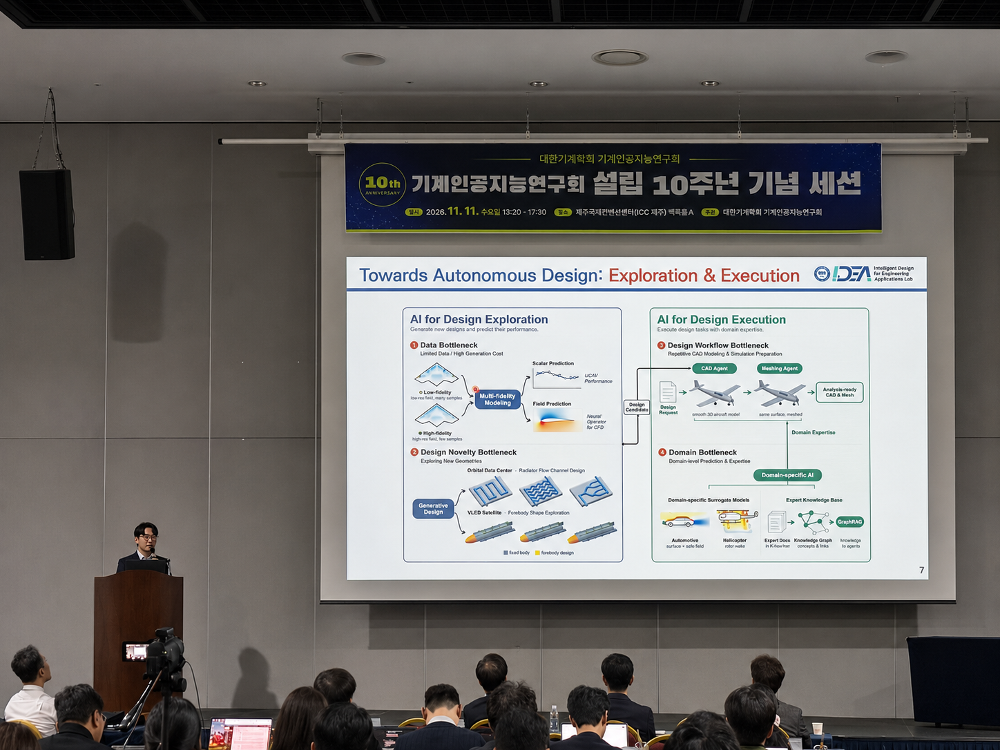
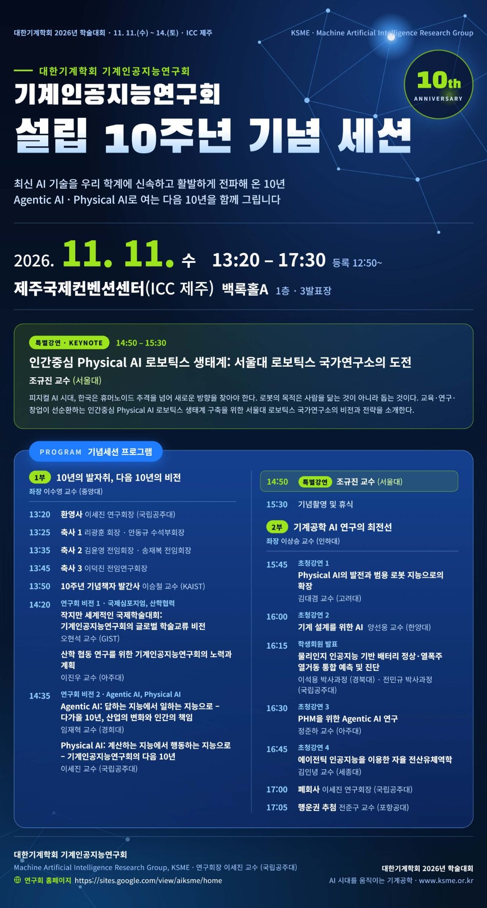

양선웅 교수, 기계인공지능연구회 10주년 기념 Rising Star 세션 초청강연
양선웅 교수가 대한기계학회 기계인공지능연구회 설립 10주년 기념 세션의 Rising Star 세션에 초청되어, ‘기계 설계를 위한 AI’를 주제로 강연했습니다.
이번 기념 세션은 대한기계학회 2026년 학술대회의 일환으로 11월 11일(수), 제주국제컨벤션센터(ICC 제주) 백록홀 A에서 열렸습니다. 연구회의 지난 10년을 돌아보고, Agentic AI와 Physical AI를 중심으로 기계공학 AI 연구의 다음 10년을 논의하는 자리로 마련되었습니다.

양선웅 교수는 오후 4시 초청강연에서 AI를 활용한 설계 탐색과 설계 수행의 자동화를 소개했습니다. 다중 충실도 모델링을 통한 성능 예측, 생성형 AI 기반 형상 설계, CAD·메싱 에이전트와 도메인 지식의 활용 등 IDEA LAB의 연구 방향과 사례를 공유했습니다.
기념 세션 안내 포스터
